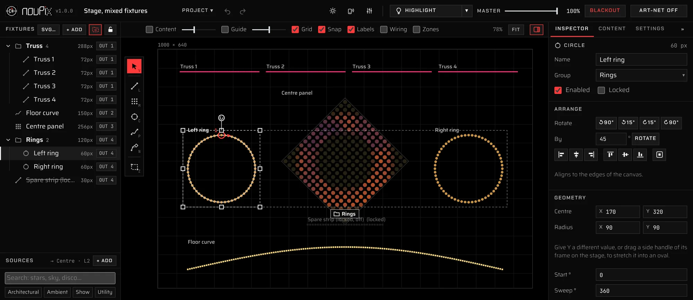

01 / Map
Draw your fixtures, or import them
Lay out the installation as it is built: every pixel where it really sits.
- Lines, matrices, circles, arcs and ovals, straight or curved paths and a pen
- Import an SVG drawing of the building as fixtures or as a guide
- Group, lock, align, rotate, resize, copy and paste
- Pixel count, colour order and wiring direction per fixture
- Lock a strip's pitch and its length sets the pixel count, like a real strip cut to length
- Dot fixtures for PARs, wall washers and big pixel modules
